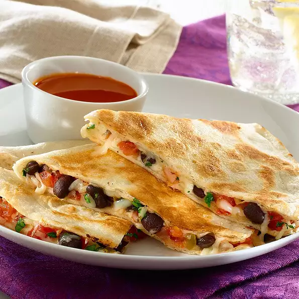

Bean Quesadillas Recipe

Ingredients
- 1 cup pico de gallo salsa
- 1 15.5 oz can black beans, drained and rinsed
- 1/2 cup monterey jack cheese
- 2 tablespoons finely chopped cilantro
- 4 10 inch flour tortillas
- 1 teaspoon extra virgin olive oil
- 1 oz salsita
Directions
- Using small-hole strainer, drain liquid from Pico de
Gallo Salsa; discard liquid. Transfer remaining tomato
mixture to medium bowl. Mix in black beans, cheese and
cilantro until combined.
- Divide black bean mixture evenly over half of each
tortilla (about 1/2 cup each). Fold tortillas in half.
- Heat large griddle or skillet over medium-high heat. Brush
with oil. Place filled tortillas on griddle. Cook, carefully
flipping once, until tortillas are golden brown and crisp and
cheese filling melts, about 5 minutes.
- Cut quesadillas into wedges. Serve with your favorite
Salsita variety, if desired.